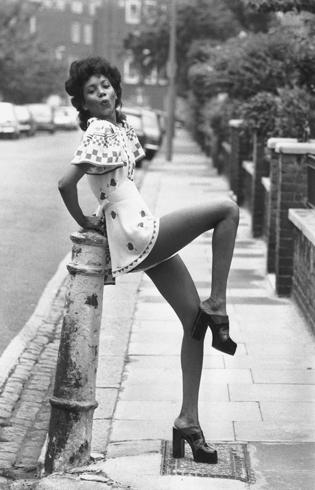

Jeans got wider, heels got taller, and synthetic fabrics flooded fashion stores during the '70s. In New York, Halston's coterie of Studio 54–dwelling cool girls brought disco trends like Lurex halter tops and palazzo pants to the mainstream, while on the other side of the Atlantic especially, the punk scene thrived, led by Vivienne Westwood and Malcolm McLaren in tattered T-shirts and safety-pinned plaid.
